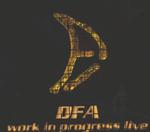

| Artist: | DFA |
| Title: | Work In Progress Live |
| Label: | Moonjune Records MJR003 |
| Length(s): | 66 minutes |
| Year(s) of release: | 2001 |
| Month of review: | [10/2001] |
| 1) | Escher | 10.08 |
| 2) | Caleidoscopio | 9.16 |
| 3) | Trip On Metro | 6.36 |
| 4) | La Via | 15.25 |
| 5) | Pantera | 8.10 |
| 6) | Ragno | 11.12 |
Caleidoscopia is a more Italian sounding piece of prog. And this is not just because of the Italian vocals. The song opens moodily with Fender like keyboards and the remainder of the instruments keeping themselves down. The music on this track is certainly more proggy with lots of things happening, the music being a mix of traditional but complex prog and fusion with quite a large role for the guitarist and ever busy De Grandis filling up the holes in the music with his fills.
Trip On Metro is something else again. This is an older track from their first demo and it opens in a very jazzy fashion with the bass and keyboards interacting. Some Yes in there as well, although some will recall more the freakier King Crimson. The music however is more quirky than powerful. Then we break into something more comfortable and melodic. Of course it does not stay that way: parts of the songs are quite neurotic (say eighties KC), some parts are more powerful (nineties KC), while other parts are more traditional progressive.
La Via is by far the longest track on this album. The track like Caleidoscopio has some Italian vocals and shows us a raging drummer, a jazz rockish guitar sound and on the whole a rather aggressive feel. The band does build in some more atmospheric parts in which the band builds up a strong atmosphere and follows up with some subtle melodies. Of course, after that it is freak time with an ELP feel. The next atmospheric passage is one where the music dies down mostly, and De Grandis or Bonomi sings his parts. Afterwards, the music turns for the melodic with a leading role for the fluting keyboards of Bonomi. The closing guitar solo is also very strong.
Back to the more fusion oriented style of earlier with the busy opening of Pantera. Again I get this feeling of a combination of ELP and King Crimson: the keyboard sound of the one, the abrasiveness of the other. After a quieter passages we get some hammered piano, followed by a more Genesis like passages. Think One For The Vine here. Then the bands starts freak out again and the reference is lost. Plenty of organ and the music is fast and complex (commonalities with Gerard and such arise). However, the band closes the song with some moody keyboards.
Before Ragno starts it seems to me the band is rather shy because of the enthusiasm of the audience. They are probably not used to this. Actually Ragno brings us little new: raging jazzrockish parts are alternated with moody ones where the keyboards reign. The drummer is continually busy pressing his stamp on the music, filling up the music with fills and so on (well of course that is what fills are for). Sometimes the music meanders a bit too much, but generally the band makes up for this by nice turns of phrase and good melodies rearing their heads suddenly.